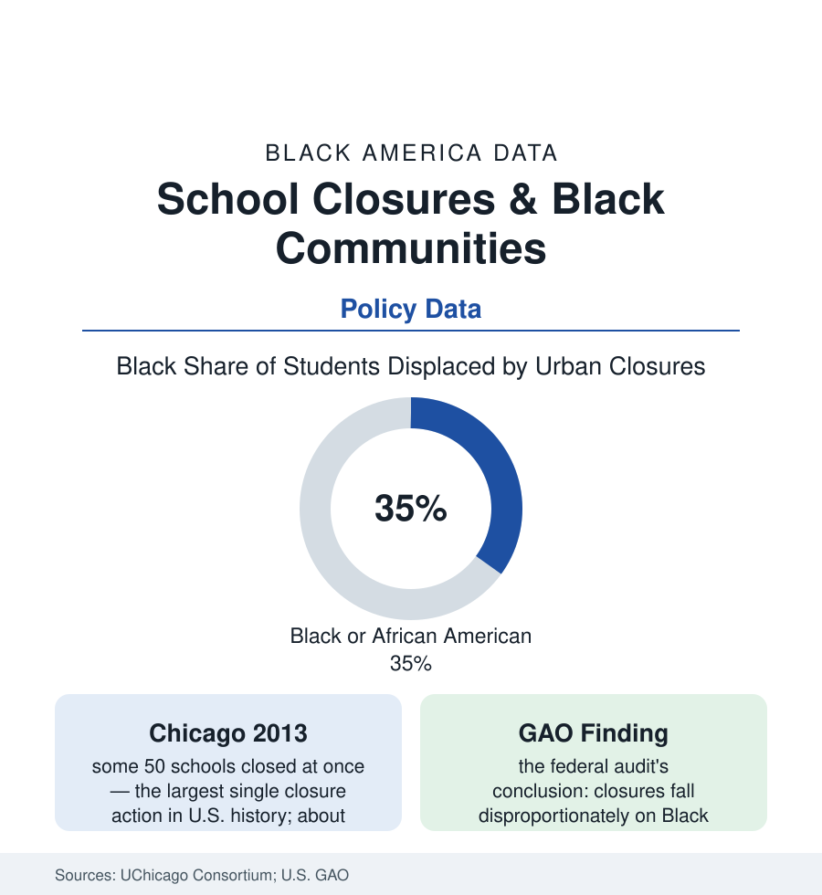

Black Education
School Closures in Black Communities: The Building Was the Neighborhood
Black students are a third or more of students displaced by school closures while being a seventh of enrollment. The closure-wave data and what the research found after.

Between 2000 and the early 2020s, American districts closed thousands of public schools in the name of enrollment, budgets, and performance — and the Government Accountability Office's audit of the wave recorded its demographic signature plainly: the closed schools served student bodies disproportionately Black and poor relative to the systems that closed them. In the big-city actions the skew sharpens: in Chicago's 2013 closure of some fifty schools, about 88% of the displaced students were Black, in a district where Black students were under 40% of enrollment. The schoolhouse is also the neighborhood's largest public building, its employer, and its archive — which is why the closure file is read in every affected community as something larger than a facilities decision. This article reports the data and the research on what followed.
The Wave: Scale and How Buildings Were Chosen
The NCES counts put closures at roughly a thousand public schools a year nationally across much of the period, spiking in the big-district actions (Chicago 2013, Philadelphia's two dozen the same year, Detroit's rolling closures, New Orleans' post-storm conversion of its entire system, Washington's rounds). The stated criteria recur in the district documents: building utilization (the enrollment declines of the cities section's population file — Black urban enrollment falling fastest as families suburbanized and birth cohorts shrank), per-pupil cost in half-empty buildings, and academic performance ratings. The research record on the criteria's application finds the pattern the GAO confirmed: given those formulas, the buildings that close are the ones in Black neighborhoods — because those are the neighborhoods the prior decades' disinvestment, highway, and housing decisions already emptied — and the performance formula's inputs (test scores tracking the funding and poverty files) select the same schools twice. The community-hearing record (thousands of testimony transcripts in the major actions) constitutes the file's primary-source shelf: the closures were, in the documented phrase of the hearings, announced to communities rather than decided with them, a process fact the later district policies (moratoriums, community-review requirements, closure-impact studies) were written to repair.
What the Research Found After
The follow-up studies are the file's core, and they are unsparing in both directions. The UChicago Consortium's tracking of the 2013 cohort found most displaced students landed in schools no better-rated than the ones closed (only a minority reached the top-tier 'welcoming schools' the plan promised), with achievement effects slightly negative in the transition years and roughly neutral after — the closure dividend, in the flagship study, failing to arrive for the typical student. The New Orleans research (the ERA-New Orleans longitudinal work) records the counter-case: the post-Katrina all-charter rebuild coincided with large test-score gains for a nearly all-Black student body — attributed by the researchers to the system's total replacement, its funding surge, and its teacher-workforce turnover, a package no ordinary closure wave replicates and whose community costs (the dismissal of some 7,500 mostly Black school employees, the veteran-teacher corps among them — the employment file's single largest displacement event in this atlas) the same record documents. The receiving-school studies complete the ledger: class-size spikes, rivalry and safety friction in merged buildings (the 'welcoming' audits), transportation burdens shifted to families, and the closed buildings' afterlives — sold, repurposed, or vacant as the neighborhood's most visible emptiness.
The Institution That Closed With the School
The non-academic ledger is what the community testimony kept insisting the formulas could not see, and the subsequent research largely confirms its items: the closed school as employer (the Black paraprofessionals, cafeteria and custodial staffs, and teachers of the employment section, concentrated in the neighborhood schools), as safe-passage geography (the routes and crossing guards re-drawn overnight), as the polling place, pantry site, and summer-feeding location of the service map, and as the archive — trophies, murals, alumni associations, the segregated-era Black schools whose buildings were the community's self-built monuments (the Rosenwald schools' preservation file is this instinct, historicized). The policy era's response instruments are data of their own: the closure moratoriums several big districts adopted, the equity-impact assessments now required in some states' procedures, the community-school conversion model (keeping the building, wrapping the services — the counter-design), and the land-disposition fights (the community land-trust and right-of-first-refusal campaigns for the closed buildings' next lives).
Reading the Closure Data
A third of the displaced from a seventh of the enrollment, a dividend the flagship research could not find, and a building whose closing the neighborhood reads — with the data on its side — as a chapter of a longer ledger: the closure file is where education policy's spreadsheets meet the geography every other section of this atlas has been mapping. The school was never only a school in the data. The record of what happened when it closed is the proof.
More in Black Education
Black Educational Attainment: High School Parity, the College Gap
About 89 percent of Black adults hold a high school diploma and one in four holds a bachelor's degree or higher — the attainment ladder, the college completion gap, and the generational trend.
Historically Black Colleges and Universities: Enrollment and Degrees
More than 100 HBCUs enroll roughly 290,000 students and award about one in six Black bachelor's degrees — an outsized share from a small sector. The federal education data.
Black College Enrollment: 2.4 Million Students
About 2.4 million Black students are enrolled in American colleges — nearly two-thirds of them women. The NCES enrollment data by sector, level, and trend.
Source: National Center for Education Statistics; UChicago Consortium on School Research; Education Research Alliance for New Orleans; Journey for Justice Alliance and district closure records; Government Accountability Office.